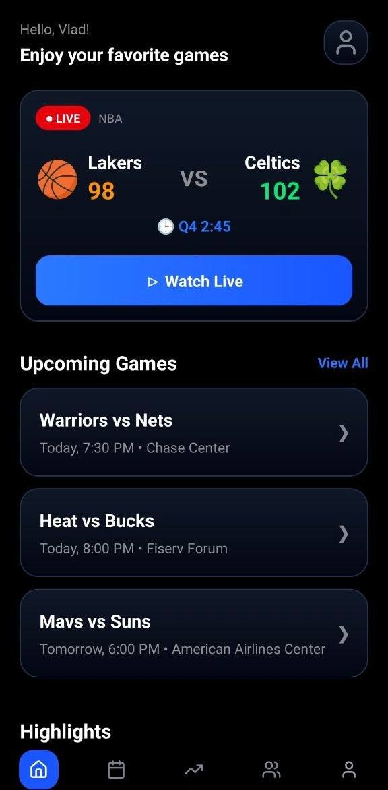
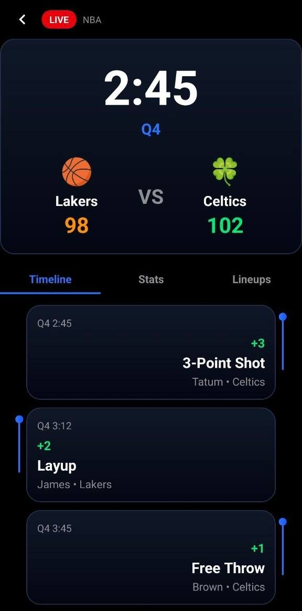
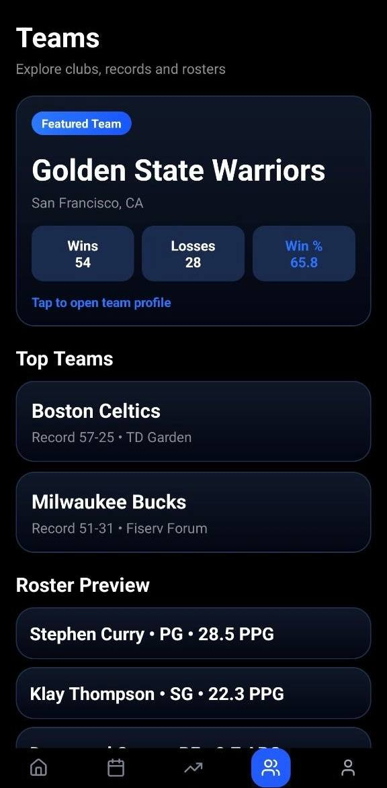
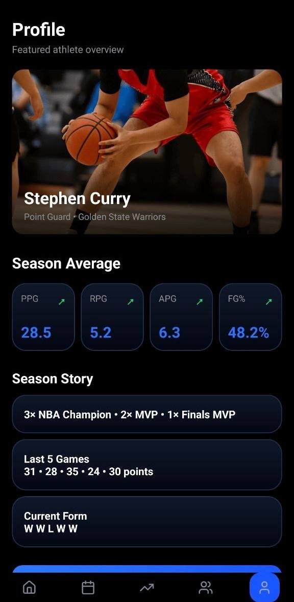
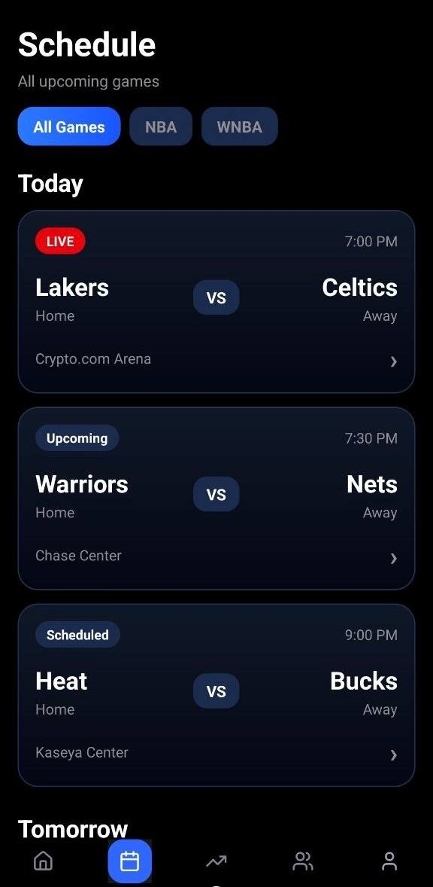
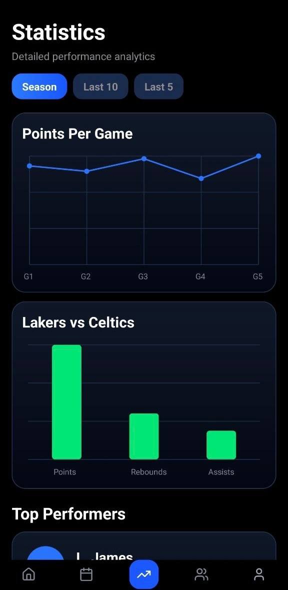
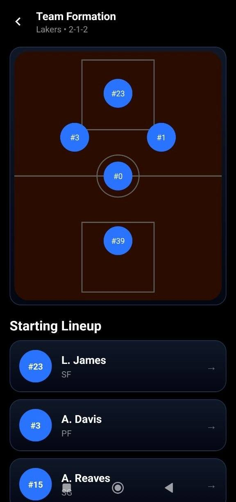
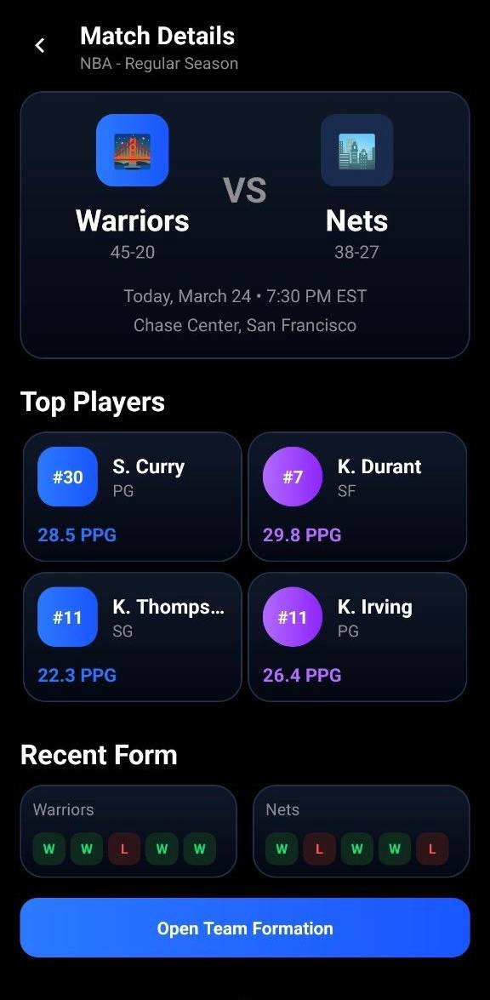

Live sports companion
Schedule · Stats · Teams · Players
One mobile control room for live scores, schedules, teams and player analytics
Basket Soccer turns sports tracking into a sleek mobile dashboard where users can follow live games, review upcoming schedules, compare teams, inspect player profiles, view formations, and move through statistics panels with a premium match-day feel.
Compare featured teams, records, top clubs, and roster previews.

LIVE
NBA
Lakers
98
2:45
Q4
VS
Celtics
102


See score changes, timelines, events, and current quarter status in one focused view.

Basket Soccer feels less like a basic score app and more like a live sports command center built for game-day focus
Main product capabilities
Live match tracking
Follow active games with score, quarter, timeline updates, and recent events in real time.
Upcoming schedules
Browse today and tomorrow games, leagues, arenas, and match times through a clean schedule feed.
Team overview
Inspect featured clubs, records, top teams, and roster previews from one team hub screen.
Player profiles
Explore athlete highlights, season averages, form, and short performance stories.
Formations and lineups
Review starting lineups and team formation layouts to understand match structure better.
Analytics panels
Use charts and performance cards to compare points, rebounds, assists, and top performers.
Command center
Move through the app like a live sports control desk
Live-first home
The main dashboard prioritizes current action before anything else.
Schedule grid
Upcoming matches are organized into a clean and scannable flow.
Match detail panel
Each matchup becomes a full briefing rather than just a score line.
Live timeline
The app makes score changes feel immediate and readable.
Team view
Users can compare clubs and identify standout roster pieces quickly.
Player profile
The athlete layer adds personality and context to the game data.
Formation mode
Spatial team organization adds tactical understanding to the app.
Statistics view
Users can move from pure viewing into comparison and performance reading.
Current panel
Open with a live-focused home dashboard
The home screen immediately surfaces a live game, watch prompt, and upcoming match cards so the app feels match-first from the start.
Live screen carousel



Why the app feels sharper than a basic score tracker
★★★★★
“It feels like a real sports dashboard because live score, upcoming schedule, players, formations and stats all connect instead of sitting in random tabs.”
Marcus D.
Sports app user
★★★★★
“The live screen and timeline make active games feel much more intense than in a plain text results app.”
Jordan K.
Game-day follower
★★★★★
“The player profile and formation views add depth, so it’s not only about scores but also context and analysis.”
Leo P.
Stats-driven viewer
Download app
Use Basket Soccer to follow games like a live sports control room
Track live matches, inspect teams, study player profiles, browse schedules, review formations, and read sports analytics from one premium mobile product.